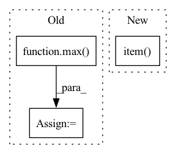

Pattern ID :12600
Before Change
size_list, tensor = _pad_tensors(tensor, group)
if rank == dst:
max_size = max( size_list)
tensor_list = [tensor.new_empty([max_size]) for _ in size_list]
dist.gather(tensor, tensor_list, dst=dst, group=group)
gathered = []After Change
gathered = []
for data_tensor, size_tensor in zip(tensor_list, size_list):
buffer = data_tensor.cpu().numpy().tobytes()[:size_tensor.item() ]
gathered.append(nncore.loads(buffer))
else:
dist.gather(data_tensor, dst=dst, group=group)In pattern: SUPERPATTERN
Frequency: 3
Non-data size: 3
Instances Fragment ID: 42781628
Project Name: yeliudev/nncore
Commit Name: 7b1c1711f2805cd55f6fdd396743454017170d76
Time: 2021-04-28
Author: yeliudev@outlook.com
File Name: nncore/engine/comm.py
M Class Name: AnonimousClass
N Class Name: AnonimousClass
M Method Name: gather(3)
N Method Name: gather(3)
M Parent Class:
N Parent Class:
M File Name: nncore/engine/comm.py
N File Name: nncore/engine/comm.py
M Start Line: 244
M End Line: 255
N Start Line: 265
N End Line: 281
Before Change
)
// Pad examples to have same length.
max_length = max( [len(t) for t in asr_tokens])
if max_length == 0:
max_length = 1 // The ASR may output empty transcripts.
for t in asr_tokens:
t += [0] * (max_length - len(t))After Change
// Pad examples to have same length.
// Manage length of predicted tokens
asr_tokens_lens = torch.tensor([max(len(t), 1) for t in asr_tokens])
max_length = asr_tokens_lens.max().item()
for t in asr_tokens:
t += [0] * (max_length - len(t))
asr_tokens = torch.tensor([t for t in asr_tokens])
Fragment ID: 42781624
Project Name: speechbrain/speechbrain
Commit Name: 31429ba76a94ea5481408307f5272c6b15034fc4
Time: 2021-01-18
Author: loren.lugosch@gmail.com
File Name: recipes/timers-and-such/multistage/train/train.py
M Class Name: SLU
N Class Name: SLU
M Method Name: compute_forward(3)
N Method Name: compute_forward(3)
M Parent Class: sb.Brain
N Parent Class: sb.Brain
M File Name: recipes/timers-and-such/multistage/train/train.py
N File Name: recipes/timers-and-such/multistage/train/train.py
M Start Line: 54
M End Line: 64
N Start Line: 55
N End Line: 61
Before Change
break
elif np.abs(np.nanmin(self.loss_history[:-1]) - loss.item()) < (self.relative_tolerance * 1e-4) and L < 1e-5:
self.loss_history.append(loss.detach().cpu().item())
self.L = max( 1e-7, L)
self.L_history.append(self.L)
self.current_state += self.grad/L
self.lambda_history.append(np.copy(self.current_state.detach().cpu().numpy()))
self.decision_history.append("accept bad grad")After Change
L /= 10
continue
if self.verbose > 1:
print("grad step loss", loss.item() , "L", L)
if np.nanmin(self.loss_history[:-1]) > loss.item():
self.loss_history.append(loss.detach().cpu().item())
self.L_up() Fragment ID: 42781622
Project Name: connorstoneastro/autoprof
Commit Name: 913d659541a70f6c852a8114033abc9a1e0deadc
Time: 2023-01-06
Author: connorstone628@gmail.com
File Name: autoprof/fit/lm.py
M Class Name: LM
N Class Name: LM
M Method Name: grad_step(1)
N Method Name: grad_step(1)
M Parent Class: BaseOptimizer
N Parent Class: BaseOptimizer
M File Name: autoprof/fit/lm.py
N File Name: autoprof/fit/lm.py
M Start Line: 91
M End Line: 115
N Start Line: 100
N End Line: 135